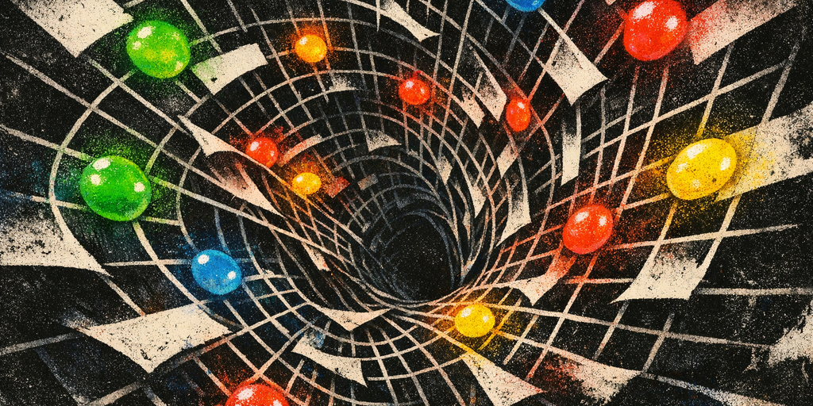
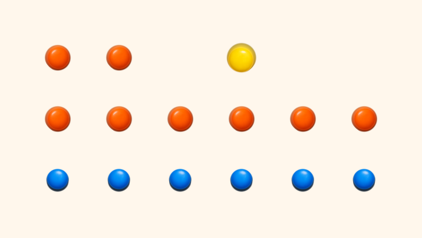
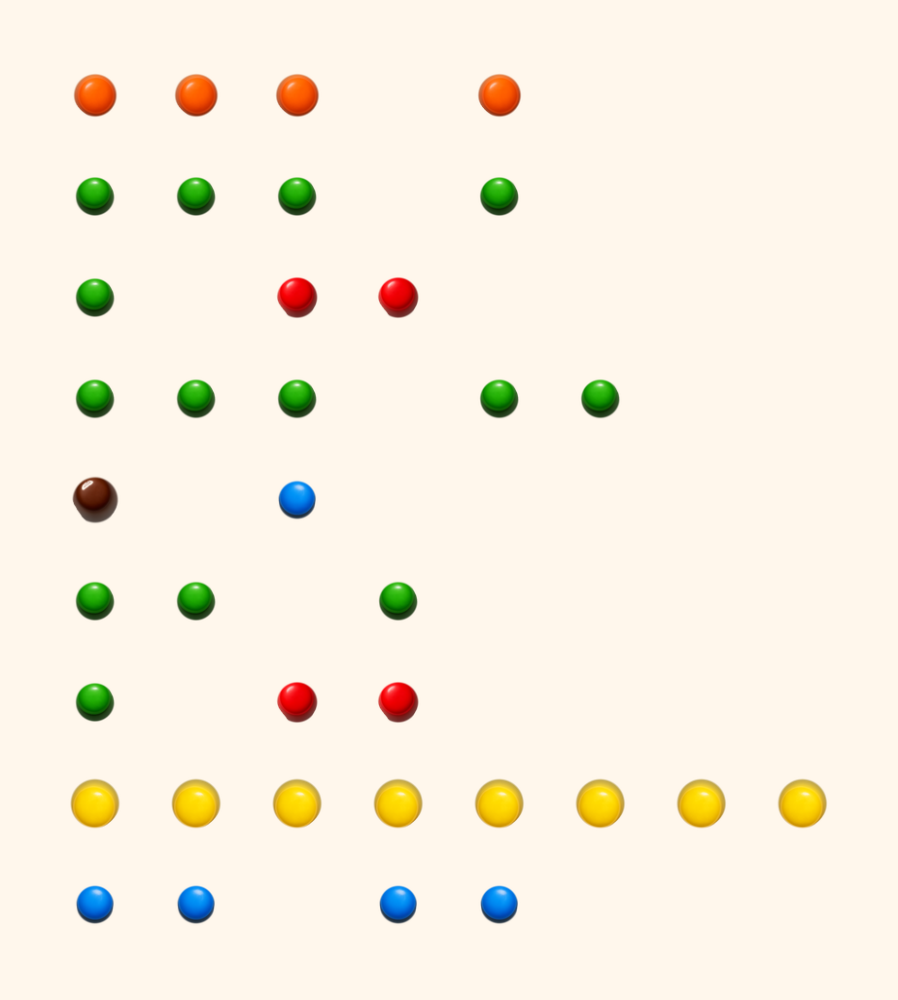

What if a little pile of M&Ms on a table was a real program?
I mean literally. Imagine you arrange M&M-like candies into a specific pattern, that pattern is executable code.
Alright story time. Featuring inline interactive interpreter embedded right inside this post.
It all started when I spilled a full packet of GEMS † GEMS is sort of an Indian version of M&Ms. on the floor cus I opened (ripped?) the packet a bit too hard.
It fell into an interesting pattern that I could only describe as the shape of an arrow.
Random patterns, fractals, interpreting nonsense into structure are hobbies that entice me. I am somewhat of an apophenic when it comes to these things.
The colors, the placements, and the structure of what I saw dropped a silly idea into my minds eye. What if I could write programs with M&Ms. This is the story of one of my many silly little projects.

abstract art of m&ms being parsed
Seeing the spilled candy on the floor, a few constraints dawned on me...
- There are only six useful colors.
- A photo is a terrible place to store exact symbolic data.
- Candy is round, glossy, messy, and inconveniently physical.
- Strings are a disaster if you try to cram them into an image.
- If this thing is going to be funny, it still has to actually work.
So I built it.
The result is MNM Lang, a tiny programming language where:
- source code is written as runs of six letters:
B G R Y O N - those runs compile into a PNG made from candy sprites
- the PNG decompiles back into source exactly
- and a controlled photo decoder can recover programs from mildly skewed images (I hope that works)
There is a CLI, a browser playground, example programs, tests, and a sprite pack generated specifically for the project.
And this is obviously not a practical language. It is a serious implementation of a silly idea.
The core problem
If you only have six candy colors, how do you build a language that is:
- easy to place by hand
- easy to read from a photo
- expressive enough to run real examples
- and small enough that the whole bit stays funny?
My answer was: encode instructions by color family, and encode operands by count.
That means a token like this:
BBB
isn’t “three arbitrary blue things.” It means a specific opcode.
And a token like this:
RRRR
means the integer literal 3, because operand values are
len(token) - 1.
That single rule ended up doing a lot of work for me:
- it is easy to author in text
- it is easy to render into image cells
- it is easy to reconstruct from image geometry
- and it feels appropriately ridiculous
You can explain the language to someone in about thirty seconds:
“Blue clusters are control flow, green is stack and variables, yellow is math, orange is I/O, brown is labels and strings, red is stack shuffling and logic. If you want the number five, use six red candies.”
Whether or not that's intuitive is not a question I can answer at this time.
Images are bad at text
The earliest fork in the road was strings.
I could have tried to encode text directly into candy layouts. Maybe invent a micro-alphabet. Maybe use rows of yellow and red as bytes. Maybe do some cursed base-6 trick.
That would have been technically possible and spiritually awful.
The fun part of the project is the visual structure, not building an OCR-resistant QR code out of sugar shells.
So I pushed strings and initial variables into a sidecar JSON file.
That means a program has two parts:
- the visual candy layout in
.mnm - the non-visual runtime data in
.mnm.json
For example, hello world is:
OO Y
OOOOOO
BBBBBB
And because the whole bit only works if that text turns into an actual candy program, here is the compiler output for it:

`hello_world`, but in snack form
And its sidecar is:
{
"strings": ["Hello, world!"],
"variables": [],
"inputs": {
"int": [],
"str": []
}
}
And because I apparently have no sense of restraint, this page can also run that exact little program inline:
That split ended up making the whole system cleaner:
- the image only carries what images are good at: structure
- runtime input can change without moving candy
- the photo decoder does not have to pretend it can read prose from glossy candy
Sometimes the correct answer in a whimsical project is to stop being whimsical for one layer of the stack.
A language made of six colors
Once strings moved out of the image, the language itself fell into place pretty quickly.
I grouped instructions by color family:
- blue: jumps, calls, halt
- green: push/load/store/dup/pop/inc/dec
- yellow: arithmetic and comparisons
- orange: printing and input
- brown: labels and string operations
- red: swap, rotate, boolean logic
And then I made the first token on every row the opcode.
That gives the language a very physical feel. A line is an instruction. A cluster of candies is a token. More candies means a different variant.
It is almost closer to arranging game pieces than writing code.
The full programs still look absurd, which I consider a success. This is the opening stretch of the factorial example:
OOO O
GGG G
G RR
GGG GG
N B
GG G
G RR
YYYYYYYY
BB BB
Fed through the renderer, that opening section looks like this:

this is a real program
If you already know the rules, you can decode that as:
- read integer queue 0
- store into variable 0
- push 1
- store into variable 1
- label 0
- load variable 0
- push 1
- compare
> - jump-if-zero to label 1
Which means, yes, I wrote a looping factorial program out of candy.
The only correct compiler target was an image
If the whole gimmick is “this program is candy,” the compiler cannot stop at an AST.
It has to emit an image.
So the compiler takes normalized .mnm source and renders it on a fixed grid:
- one source character per cell
- spaces become empty cells
- cells hold transparent-background candy sprites
- the output is a PNG
That fixed geometry turned out to be a huge win, because it made the reverse direction almost trivial.
If an image came from the compiler, the decompiler can:
- recover the exact row/column count from the canvas size
- sample each cell
- classify it as blue/green/red/yellow/orange/brown/blank
- strip trailing spaces
- and re-parse the result
That gives an exact round-trip:
with no heuristics at all.
In other words: the “compiler” is also a tiny image format.
I generated the candy sprites with an image model
One of my favorite parts of the project is that I didn’t hand-draw the sprites.
I used AI image generation † This is a Codex Skill — a reusable capability you can give to Codex for specialized tasks like image generation. to create six M&M-style candy tokens:
- blue
- green
- red
- yellow
- orange
- brown
The raw generations were decent, but not directly usable. They came with a few annoying traits:
- too much studio backdrop
- a bit of inconsistent shadow
- minor scale differences
So the final asset pipeline became:
- generate six isolated candies with transparent-background prompts
- normalize them with a small script
- crop and center them onto a canonical 128x128 canvas
- extract palette metadata for the decompiler and photo classifier
Not conceptually. Literally. The checked-in prompt bundle for the sprite pack looks like this:
{
"prompt": "a single blue candy-coated chocolate lentil ... isolated on a transparent background",
"composition": "one candy only, top-down, centered, consistent scale",
"constraints": "transparent background; no logo; no text; no watermark",
"out": "blue.png"
}
And the normalization script starts by estimating the backdrop and isolating the largest candy blob:
background = np.median(border, axis=0)
distance = np.linalg.norm(rgb - background, axis=2)
threshold = filters.threshold_otsu(distance)
mask = distance > max(18.0, float(threshold) * 0.9)
return labeled == regions[0].label
Then it scales and centers that cutout onto the canonical sprite canvas:
available = CANVAS_SIZE - (PADDING * 2)
scale = min(available / cropped.width, available / cropped.height)
canvas = Image.new("RGBA", (CANVAS_SIZE, CANVAS_SIZE), (0, 0, 0, 0))
x = (CANVAS_SIZE - resized.width) // 2
y = (CANVAS_SIZE - resized.height) // 2
canvas.alpha_composite(resized, (x, y))
And finally it writes the palette metadata that the decompiler and photo classifier both use later:
rgb = array[..., :3][array[..., 3] > 0]
mean_rgb = tuple(int(round(value)) for value in rgb.mean(axis=0))
palette[color[0].upper() if color != "brown" else "N"] = mean_rgb
That normalization step mattered a lot more than I expected. If the shadows are too strong, candies that are supposed to be separate blobs start merging after blur and perspective transforms. That sounds like a silly implementation detail, but it is exactly the sort of thing that determines whether “photo decoding” is real or fake.
Projects like this are fun because the silly part and the engineering part keep interfering with each other in useful ways.
I almost talked myself into training a model
When you say “image decoding,” your brain immediately offers to make the project bigger than it needs to be.
I had the same impulse:
- maybe I should train a tiny classifier
- maybe synthesize candy crops
- maybe build the MNIST-for-M&Ms pipeline
That would be fun. It is also not necessary for v1.
The version I shipped uses deterministic image processing for the photo decoder:
- estimate background color from the border
- segment candy-like foreground blobs
- classify each blob against the canonical six-color palette
- cluster the blobs into rows
- infer spaces from centroid gaps
- re-parse the reconstructed source
This works surprisingly well for the target use case:
- overhead photo
- plain contrasting background
- separated candies
- mild blur
- small rotation or perspective skew
It absolutely does not solve “dumped a bag of candy on a messy kitchen table and took a dramatic iPhone shot.”
Real example programs are where the joke becomes a language
I didn’t want this to stop at “hello world with candy colors.”
So I added a few examples that push on different parts of the language:
hello_world
Pure output. Basically the proof that the whole pipeline exists.
echo_name
Uses a string queue and concatenation to greet the input name from the sidecar.
factorial
This is where it starts feeling real:
- labels
- variable mutation
- arithmetic
- conditionals
- loops
fizzbuzz
Mandatory. Also unexpectedly good at showing off the design because it uses:
- modulo
- branching
- string slots
- repeated output
- a small amount of state
Watching fizzbuzz compile into a candy grid and then run correctly is exactly the
kind of payoff I wanted from the project.
At that point it stops being “a cursed novelty syntax” and starts being “okay, this is a legitimate little VM that happens to look like a snack.”
The browser playground made it feel like a real toy
The CLI is the serious interface:
- compile
- decompile
- run
- serve
- list examples
But the browser playground is what makes the repo inviting.
It lets you:
- load a shipped example
- edit source
- edit sidecar JSON
- render the candy-sheet preview
- run it immediately
- upload an image and decode it back into source
I also added two views that made the whole thing feel much more like a real language toolchain instead of a cursed renderer demo:
- a tree-formatted AST showing what the parser believes each candy row means
- a tree-formatted execution trace showing which branches the interpreter actually took at runtime
For a tiny program like hello_world, the AST stays pleasantly readable:
Program (3 instruction(s))
|-- labels
| `-- (none)
`-- instructions
|-- [0] PRINT_STR @ line 1 (string[0] from Y)
| `-- source: OO Y
|-- [1] NEWLINE @ line 2
| |-- source: OOOOOO
| `-- operands: (none)
`-- [2] HALT @ line 3
|-- source: BBBBBB
`-- operands: (none)
And the execution trace is exactly the kind of thing I wanted once the language had loops and
branches. Here is a clipped excerpt from factorial, right around the point where
the loop either keeps going or breaks out:
Execution
|-- [step 8] [ip=7] GT @ line 8
| `-- state: stack=[1] vars=[5, 1]
|-- [step 9] [ip=8] JZ (label[1] from BB) @ line 9
| |-- branch: fallthrough -> instruction[9]
| `-- state: stack=[] vars=[5, 1]
...
|-- [step 52] [ip=7] GT @ line 8
| `-- state: stack=[0] vars=[1, 120]
|-- [step 53] [ip=8] JZ (label[1] from BB) @ line 9
| |-- branch: taken -> label[1] @ instruction[15]
| `-- state: stack=[] vars=[1, 120]
That same tree output now shows up in both the CLI and the browser UI, which is nice because candy code is way funnier once you can also inspect it like a real compiler/runtime pipeline.
So here is the same idea, but actually live:
We need tests
I designed the interpreter but the code is mostly written by GPT 5.4 XHigh via Codex.
And vibe coding calls for tests cus what if it reward hacked † Reward Hacking is when an AI optimizes for the metric you gave it rather than the goal you meant — passing tests without actually solving the problem. my idea into existence?
So I wrote tests for the actual guarantees:
- parser validation
- runtime semantics
- example golden outputs
- exact source/PNG/source round-trips
- synthetic photo decoding with blur, rotation, and perspective skew
- API behavior
- a playground-style smoke flow
- sprite asset sanity checks
One of the bugs I hit was that the photo decoder accidentally treated fully opaque RGB images as if their alpha channel meant foreground everywhere, which turned the entire canvas into a single blob. That sounds obvious once you know it, and it is exactly the kind of mistake I wanted to catch.
Another was that the sprite normalization kept too much drop shadow, which caused nearby candies to merge after blur. Again: a ridiculous bug, but a real one.
The tests are what separate “look, I rendered candy once” from “this is an actual system with constraints and failure modes.”
The best part of the project is the tradeoff it forces
Every joke project has a point where you decide whether you are going to protect the joke or protect the implementation.
MNM Lang kept forcing me to do both.
That is how you end up with rules like:
- blue cluster width decides which branch instruction you mean
- red run length encodes integer literals
- strings live in JSON because candy OCR is a terrible life choice
- compiled PNGs are exact but photos are “controlled” on purpose
None of that is language design orthodoxy.
All of it is completely justified by the premise... I tell myself.
If you want to try it
GitHub: mufeedvh/mnmlang
The repo includes:
- the interpreter
- the photo decoder
- the candy sprites
- example programs
- the local playground
The best first command is probably:
uv run mnm serve
Load fizzbuzz, render it, and look at the compiled PNG for a second.
It really does look like a programming language you could pour out of a bag.
So stupid.
Oh and I have more silly projects. This is #1 of the series. Tune in for how I
reverse engineered my keyboard's driver binary to play snake with the backlights while my agents
run in the background.